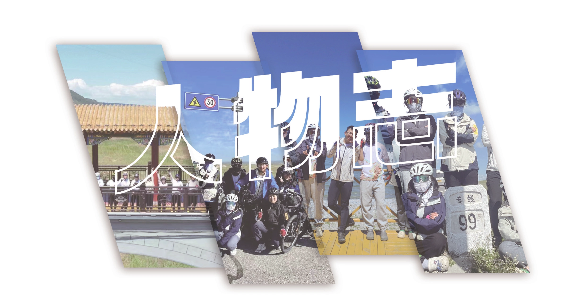
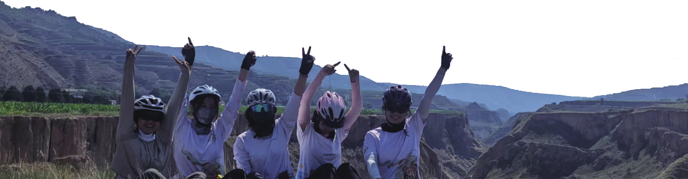

人物志
原刊73

大姐李一杰|一杰
本人李一杰，来自 23 飞行团，生于 1998 年，有幸排行大姐。生于安徽，长于云南，梦想是早日退休，游历四方然后美美回昆明养老。虽然目前就读于北医三院的康复医学与理疗学，实际上正在“辅修”一些体育专业，骑车（达成押后小目标）、游泳（强化中）、滑雪（学习中）、潜水（准备中）……性格外向（夹杂一点点社恐），喜欢成群结伴出去游玩（希望下次能顺利约到呜呜呜）！
- 某团众：你的人生我的梦，俺也要当研究生！！！
- 某团众：一位性格和个人简介一样朴实而自由的姑娘，她的笑声也是一样的朴实而自由。
- 某团众：大姐真的又阳光开朗又体贴会关心人，然后也很有个性。跟大姐相处总是很愉快，大姐还总能找到各种好吃的嘿嘿嘿。
- 某团众：六边形战士大姐太强了！
二姐刘思睿|六三
一个把帽子焊死在头上变成器官的新型人类。戴上帽子和不戴帽子是两个人，可能没戴帽子的是八二吧。喜欢摸鱼和划水，经常做着买彩票中大奖然后实现躺平的美梦但是从不去买彩票。笑点和泪点极低，且反射弧超长，显得情绪十分稳定。超级喜欢幻想，人生最高理想就是能够变成大富婆然后到处玩儿。
- 某团众：你跟楼上一块去玩，我不羡慕。
- 某团众：我的人生最大理想就是被富婆包养然后到处玩。
- 某团众：二姐是最美丽温柔可爱有趣聪明伶俐善解人意的二姐！虽然暑期的时候跟二姐还不是很熟（我也反射弧超长），但是暑期后渐渐爱上了二姐怎么办啊我好爱二姐啊好想一口吃掉啊！
- 某团众：好的八二，知道了八二。富婆带我玩！！！
团儿任致远|支原体
这是一个随队经验丰富，但不幸的是每次随队的关键词都是“怨种”的人；是一个热衷公路车竞技，暑期路上都要抓紧时间看环法却甚至一次公路车都没骑过的人；是一个总是放言“没有爬坡就不算骑车”，但遇到坡大多选择 1-1 苟上去的人。这个人很菜，但多少有点梦想；这个人总是自我评价为土狗，给人的第一印象大多是“凶神恶煞”，却被身边的人认为是稳重、温暖、靠谱的，虽然对此没有什么信心，但也慢慢接受自己确实是这样的人。
- 某团众：还好你应该不会再随队了，但是凶神恶煞的人质圆也是宝宝！
- 某团众：明白了，凶神恶煞的土狗难道是藏獒？
- 某团众：无法苟同三哥对猫的审美。
- 某团众：苦总是流向会吃苦的人，锅总是攒给要补锅的人……希望三哥以后可以少补锅！
四姐刘梦菲|阿斯
一个徘徊在“世界爆炸”和“让我去死”的六院预备役。人生最大愿望是风风光光地下葬，越早越好，并为此付出一些试图融入正常社会和人群的努力。很需要夸夸来继续活着，但是脸皮很薄不愿意直接说，是个别扭又怀揣着希望的厌世者。经常性自己一个人情绪爆炸，然后在自己写的文字里创死所有人。拖延症重度晚期患者，但会被自己的承诺绑架，只要没写 ddl 就会拖到天荒地老，但是一旦自己公开宣称了 ddl 就会熬死夜去做（注：可能是唯一的优点）。
- 某团众：以前会劝四姐别死，现在会想给四姐烧一些什么 cp 的新物料呢，但是四宝宝真可爱！
- 某团众：原来变态也是有希望的，唉……
- 某团众：看出来了，这段文字很有画面感，能够想象四姐发疯的场景。只能说四姐是变幻莫测的处于不稳定平衡甚至极限环中的四姐。
- 某团众：无法苟同四姐对猫的审美。
五哥刘庆航|橘猫
ChatGPT 评论道：你是一个坚定而勇敢的人，总是乐观向前。你拥有无限的潜力和坚韧不拔的毅力，无论面对怎样的困难和挑战，你都能坚定地走过来。你的善良和真诚感染着身边的每一个人，你的智慧和勇气成为身边人的力量。你用自己的行动证明了自己的价值和能力，你值得被赞美，值得被尊重。继续保持自信和坚强，你将会创造出更加美好的未来。
- 某团众：你甚至忙到懒得写这个。
- 某团众：发自内心佩服的人，卷心菜来了都要递根烟。
- 某团众：刘老板一看以后就会挣大钱然后大手一挥对我说：你不用努力了！
- 某团众：五哥的性格正如他甚至用了 ChatGPT 写文案一样，不愿意花一秒钟去想那些虚无缥缈的事情。但五哥又是很有哲理、很成熟的人。当你在想象的世界挣扎太久的时候，不妨去找五哥听听他对生活的“评价”。
六哥曹三省|雾路
我是雾路，以下是我：0、我加入了车协；1、我是 23 飞行团的六哥；2、我在车协里面经常教徒弟修车；3、赶 ddl：我很少赶 ddl，除非 0；4、熬夜：对于我来说很罕见，除非 2|3；5、聊天：我其实不怎么喜欢社交，除非 0；6、爱一个人：我似乎不懂得怎样去爱一个人，除非 0&1；7、坦然表达情绪：我看起来很理性，很少表达自己的情绪，除非(4&5)|6；8、理性：我希望展现自己理性的一面，很少发癫，除非 7；9、细节：我其实不怎么注重细节，除非 6；10、理想主义：我是一个理想主义者，大部分时候我不会为了理想以外的事情投入情感和精力。除非 6；11、喜欢整一些奇怪的东西：是的。
- 某团众：12. 是一个明明超强却经常过分谦逊的人。
- 某团众：我调你这段的格式的时候相当痛苦你知道吗？
- 某团众：六哥的是我看的时间最长的，试图整明白逻辑。十一条捏！！！六哥好有心！！！六哥太可爱了！！！
- 某团众：本来想整点什么奇怪的东西的，但是看到六哥整的就放弃了。
七哥莫云鹤|蓝毛仔
一只不知道来自哪里的仔仔努力试图融入大家。据说奶龙在贵协很火，于是他经常发这个表情包；据说辣堡是车队的日常菜单，于是他也说喜欢吃辣堡，虽然一点不能吃辣——他在大部分事情上非常随和，没有什么特殊癖好，但是某些他自以为很重要的事情容易让他陷入内耗。比如说，“什么时候考押后？”“噢对了，你拜师了吗？”
- 某团众：太爱你啦！如果不想，那就说明还不够重要；如果想，那就行动起来！祝你早日摆脱内耗！
- 某团众：很难想象能一个人忙这么多事情，七哥伟大，无需多言！
- 某团众：哈哈哈，没想到七哥还为拜师的事发愁过。暑期的七哥和现在的七哥很难当做同一个人去回忆，有一种割裂感。但是七哥一直是很有责任感、很有趣、很可爱、很聪明的仔仔！
- 某团众：对了，什么时候拜师考押后？
小哥禹坤煜|土山
土山，22 物院本科生，山西太原人。是的我们山西人就是可以把醋当饮料喝的（大拇指）。热爱骑车，狂摔 n 次仍然乐此不疲。热爱一个人骑车，但很可惜没有太多一个人骑车的机会。也同样热爱竞技骑行，热爱速度带来的推背感。喜欢聊天，喜欢玩梗，喜欢无拘无束地大笑，听高中同学、班主任讲，楼下就能听到我的笑声，很有辨识度。有时候我说话有点欠，也算一种玩梗，我会注意我的嘴欠是在开玩笑而不过分滴。自认活得逍遥自在，或许我不是一个对自己坦诚的人，我不在乎我每个想法的原因，也不觉得非得找一些理由安插到自己的决定上是一件快乐的事。
- 某团众：读着都听到你的笑声了。
- 某团众：心直嘴快直爽却又细心的小哥，被需要时总是冲到最前面，总是无保留地爱着大家，希望以后可以一直开心！
- 某团众：太爱你啦！楼下是能听到你快乐的笑声的！以及你的生活态度，这也是一种优点，请继续保持！祝你越活越潇洒！
- 某团众：你真的很难评。我觉得其实很多时候，你并没有你想象中的那么不在乎。或许正如你所说，“或许我并不是一个对自己坦诚的人”。但这并不妨碍你是一个为团队带来欢乐、承担责任、未雨绸缪的人。不管怎样，开心就好啦！
小弟汤嘉伟|Jewish
Jewish 是一个处于卷摆二象性的混沌体，时而追求极致高效的内卷，时而追求极致高效的摆烂。他总是习惯伪装成一具尸体，藏在属于自己的角落里，沉浸在睡觉、学习、摆烂的无尽循环中，不过偶尔也会逼自己去做一些大家认为所谓“有意义的事情”，以适当增加一下自己在现实世界中的浓度。虽然身位常识黑洞，才疏学浅，但仍掌握了一定的现实世界生存法则，同时为了不破坏多位面的秩序，逐渐成为了不同位面之间孤独的旅行者。
- 某团众：今天到哪个位面了？地球指挥部 is calling you！
- 某团众：小弟是很神秘的小弟。小弟是很成熟的小弟。和小弟相处确实是件很有趣的事情。你的人生哲学也让我受益匪浅。
- 某团众：所以爱我是一件有意义的事情吗？
- 某团众：说搞学习就搞学习，真的很牛逼呀！
小十胡心月|月霜
“我们每个人都比讲述的故事中赋予我们的角色更复杂”，所以我难以定义我自己。人是流动的、连续的，因此某种程度上我很抗拒把某一个时间点里我的切面永远地定格在这样一个具有历史纪念意义的刊物上。如果一定要定格这一刻，那么我：是一个反复纠结内耗的人，是一个执着于爱与被爱但又总是一再带给别人伤害的人，是一个很想当无忧无虑的小孩子的人，是一个很喜欢拍照的人，也是一个很喜欢单纯地骑车的人。
- 某团众：太爱你啦！可可爱爱并努力成长的小十！那就去当无忧无虑的小孩子吧！祝你像小孩子一般开心成长！
- 某团众：你变过吗？感觉你一开始就是这样的。明天又会是什么样的呢？
- 某团众：我也是一个单纯很喜欢小十宝宝的人。
- 某团众：但是我爱你这件事永远不会来回横跳。
小妹曾静璇|乐迪
行走的二极管，只有自闭和癫疯两种形态，不存在中间态。最擅长的事是发疯，给我一条朋友圈，我能发一百种疯不重样。曾被评价为“抽象”，但本人对此乐在其中甚至很喜欢这个评价。常常拖延，好处是拖着拖着很快就忘了因此很少有精神压力，坏处是忘了会被骂。记性很差，所有东西都只会从我光溜溜的大脑皮层表面溜走。素质低下，但比较能装，一般会顾及形象而不会轻易表现出冒犯性。很难睡醒，经常熬夜，23 飞行团“熬夜冠军”的有力竞争者，在放假的时候会过美国时间，几乎没有感受过周末的上午。剩下的忘了。
- 某团众：好看的皮囊就是好看，有趣的灵魂千里挑一，前面忘了，中间忘了，后面忘了，大概如此。
- 某团众：保守派认为你的情况在贵团过于保守了。
- 某团众：抽象的妹！一直在想用什么词语形容妹。应该是潇洒吧，妹是活得很潇洒的人。
- 某团众：老想管妹叫姐姐不知道为什么，当然也有可能我管所有姑娘都喜欢叫姐姐。所以我改怎么称呼你呢？妹姐姐，姐姐妹（想）（别想了）。
